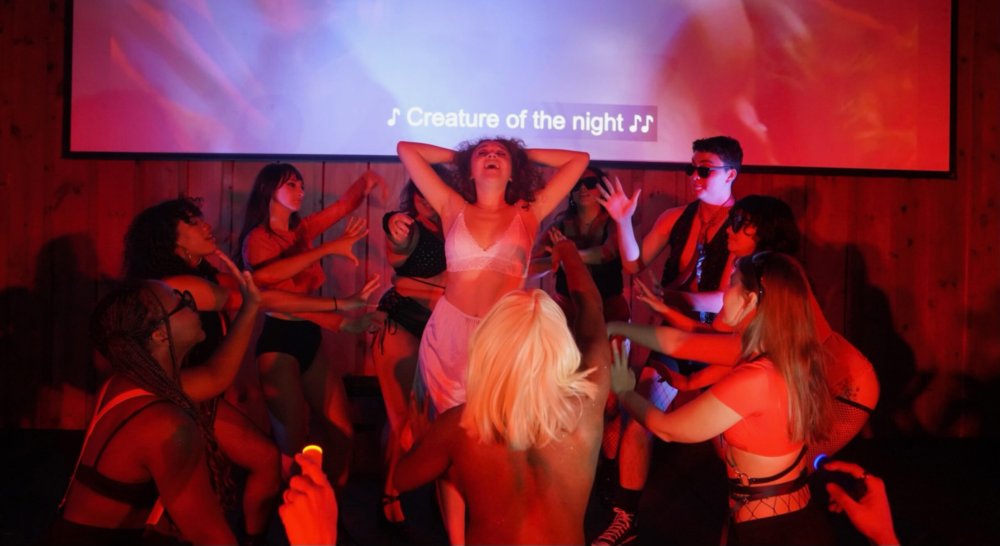

Assignment Source:https://dailyorange.com/2023/11/sus-rocky-horror-picture-show-is-a-haven-for-anyone-ever-labeled-outcast/
“The Rocky Horror Picture Show” has been part of Seth Wintermute’s life since high school when they would watch the movie during the process of discovering their identity. Now, seeing the show as a junior at Syracuse University, they said it was an empowering experience. “It’s a haven for those who might feel like outcasts,” junior Ben Freedman said. “A movie like ‘Rocky Horror,’ it’s so different and so unique from everything that has come both before and since then, that it just has this amazing legacy.” Syracuse University’s Black Box Players put on their annual production of “Rocky Horror Picture Show” on Oct. 26 at SkyBarn on South Campus. In typical “Rocky Horror” fashion, the production was a shadow play, where the 1975 cult classic played on a screen behind the actors as they dramatically recreated the movie. Tradition dictates that audience members throw objects such as forks, bread and cards at the performers as they act and yell certain lines at specific moments. With fishnets, corsets and other edgy attire, “Rocky Horror” has a distinct look. Freedman said for both audience and cast members, the colors of the night were black and red. Freedman attended the show for the second year in a row on Thursday night. He said the vast majority of the audience was familiar with “Rocky Horror.” For those who were new to the show, the production provided a sheet with information on what to do for people that were new. “You can see everything play out the way it was originally intended, and then look down and see everyone else giving their own interpretation on it,” Freedman said. “It mixes the magic of live theater, people actually performing the story in front of you with this well known movie that people know and love.” Jess DeLucia, one of the co-production managers for Black Box Players, said there is no experience like “Rocky Horror.” She said the ridiculousness isn’t a lack of effort or thought, but an intentional decision from everyone in the room to be ridiculous with the performers.‘Rocky Horror Picture Show’’s long standing tradition of audience participation sets it apart from other productions. Members of the crowd are expected to yell, get out of their seats and throw things at the performers COURTESY OF WALLER DORFF
“We’re used to doing these really formal productions that have this deep meaning,” DeLucia said. “We’re taking all this talent and this potential and this credibility that we all have, and mixing it with just the desire to have fun, and to be stupid and be crazy.” DeLucia has been a fan of the show for over ten years. In her hometown of Mattawa, NJ, there is a weekly showing of the production. She couldn’t even put a number on how many times she’s seen it. Wintermute said showings of the film historically are a space for queer people to be themselves and embrace their identities, justice and love for the community. The film has also helped people understand what it means to be queer. Kate Grover, who directed the show and is a managing director for Black Box Players, made certain intentional choices to highlight the significance the show holds for the LGBTQ community. She said that many people involved with Black Box Players and on the production team for “Rocky Horror” are queer and played a major role in the production. SU’s Black Box Players perform ‘Rocky Horror Picture Show’ each year. It is a one night only extravaganza, featuring performers new to the show and Rocky Horror veterans. COURTESY OF WALLER DORFF
“‘Rocky’ is important to me and to so many people because it gets to be about community and then self expression and exploration,” Grover said. “It’s kind of training wheels for life and going into new communities.” Some roles were “gender-bent” for the show, and Grover incorporated rainbow boas and other moments that highlight queer actors in the show. Freedman said “Rocky Horror” is a haven for people who feel like outcasts because the movie is so outrageous that it allows people to be themselves without judgment. “Part of why it’s so endearing is that it is a safe haven for the LGBTQ community,” Freedman said. “Not only a safe haven but a celebration of all things out there and all things weird and all things sexual.” Wintermute said the show was part of their self-discovery journey as a gay, non-binary person. Queer writings that Wintermude read in high school often referenced the movie, especially intersectional writings. They said that they developed a “fond love” for the movie that continued through college. Jim McMahon played Riff Raff, one of the main characters in the production. He did the show during his sophomore year as Dr. Scott and was a member of the ensemble. He said he really appreciated the experience of doing it a second time as a senior. “It’s a really good way to bring everyone together, just a one night only extravaganza,” McMahon said. “The actual freedom that Rocky explores, especially for such an old movie, I think that’s so important to college, because college is about finding yourself, exploring.” McMahon said the show works well on college campuses because college is a time of discovery and having fun. He said wearing fishnets, a gold vest and a wig onstage was a great way to have fun onstage.“I’ve been in a ton of other shows here at Syracuse, but nothing quite like ‘Rocky’ brings everyone together. And I’m very proud of that,” McMahon said. `